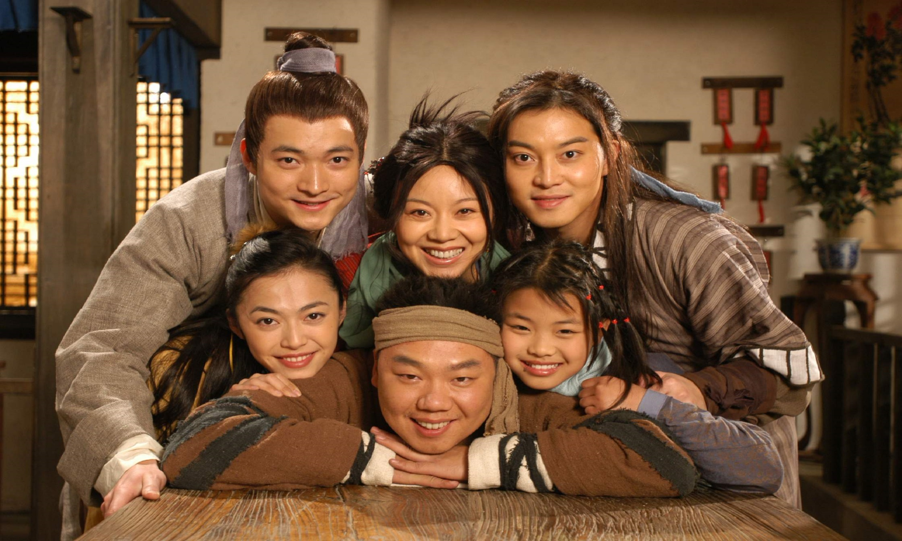
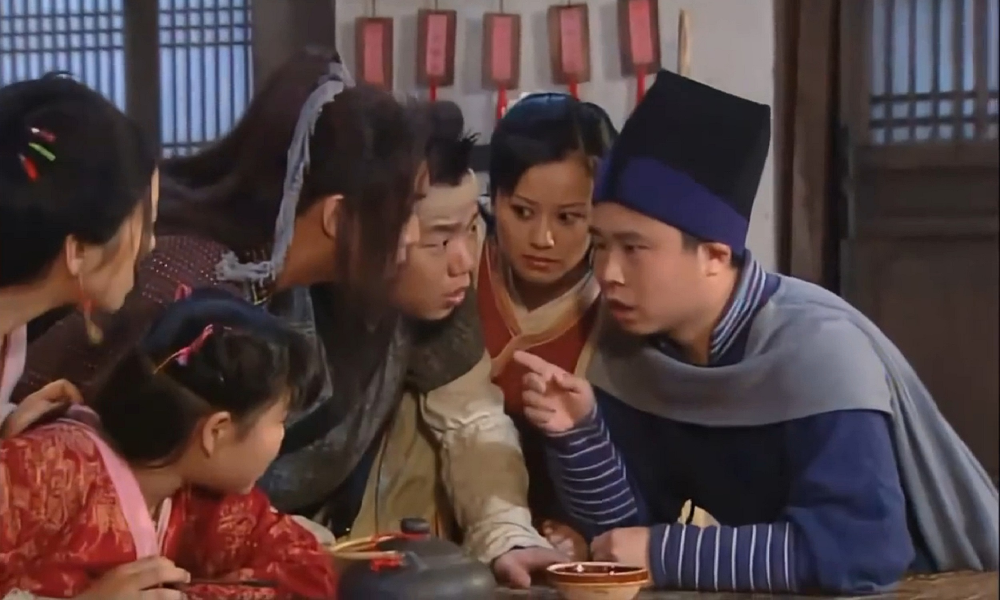

武林外传
2006年尚敬执导的电视剧



《武林外传》是由尚敬执导，间妮、沙溢、姚晨、喻恩泰、姜超、王莎莎等主演的章回体古装情景喜剧。
该剧于2006年1月2日在CCTV8黄金档首播，并陆续在中国大陆各地方电视台重播该剧在香港由无线电视首播，在台湾由八大电视台首播。
该剧的故事围绕着一个在虚拟的明代(约在万历年间)的关中地区小镇七侠镇中同福客栈里的女掌柜佟湘玉和她的几个伙计展开。这群年轻人在同一屋檐下演绎了一幕幕经典的搞笑场面，在欢笑与眼泪中陪伴观众们一起渐渐成长
本剧抨击了宣扬暴力的武侠文化，并对当时的社会现象进行了模仿、讽刺与批判。